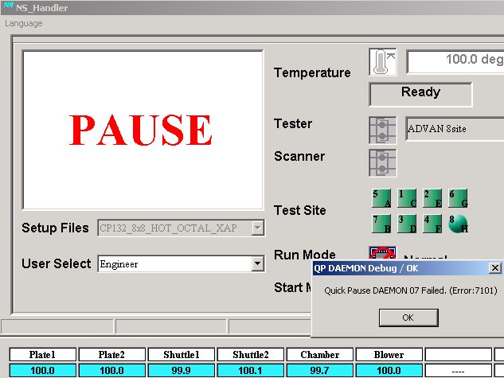

Service History
Subject: Quick Pause DAEMON 07 Failed
Handler Model: NS7080W(Xilinx, S/N:121080)
Controller: RC520
Date: 14 Mar 2008
Symptom
An error "Quick Pause DAEMON 07 Failed (Error:7101)" appeared, while running the handler, but they do not know when it came on (Please kindly refer to the attached for the error message). Clicked on "ok" and then carried on production without failure.

Action
EPSON supplied Windows Registry patch file (Xilinx.reg) for Xilinx to reduce occurrence of the error.
Cause
Regarding "Quick Pause DAEMON 07 Failed (Error:7101)", The error came out due to PC was busy.
When you operate too fast, PC will not be able to proceed it then this error come out. It is like Jam in PC.
Please kindly follow the procedure below...
1. To closed MMI.
2. To copy the attached file to FD or Thumb drive and insert to Handler.
3. W click the file. there will be come out the pop window(Registry Editor) and press "OK".
4. To Start MMI.
This file will be reduce the error occurrence